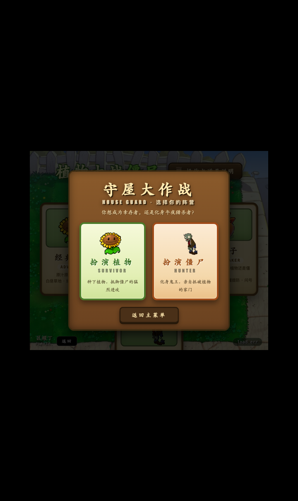
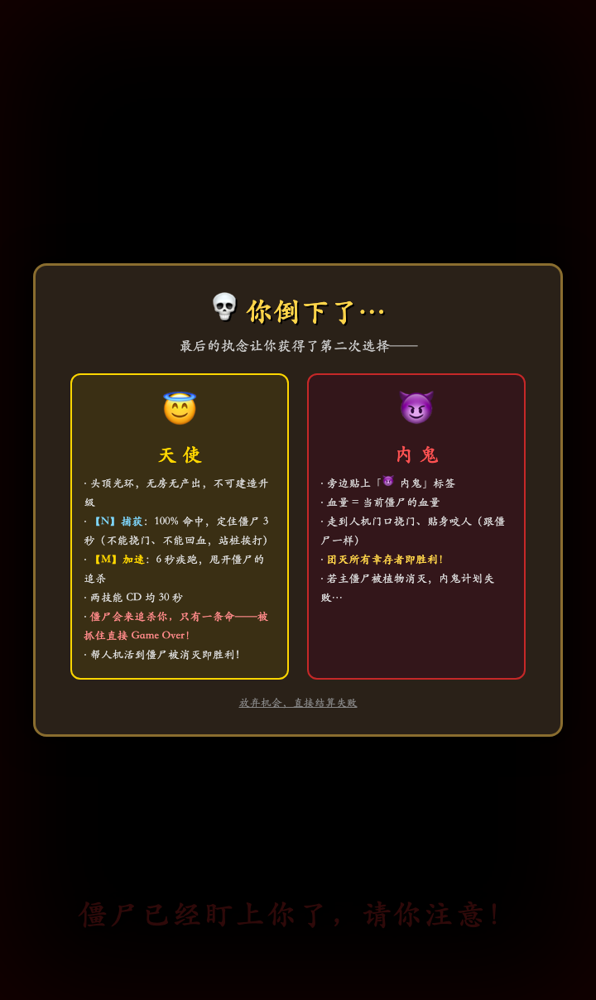

① 开局选择阵营：扮演植物守卫 / 扮演僵尸猎杀

② 倒下后二选一：天使(正义) / 内鬼(邪恶)
🎮 操作控制
·
P1 控制：
[W/A/S/D] 移动 |
[F 或 J] 呼出菜单/确认 |
[空格] 浇水 |
[G 或 右Alt] 关闭菜单 |
[M键] 角色技能 |
[N键] 修门（回25%，CD60秒） |
[B键] 倭瓜技能 |
[O键] 直接出门 |
[A/D] 菜单切栏 |
[P键] 暂停
* 单人模式也可用鼠标点击地面呼出菜单、点击植物升级/拆除。
·
P2 控制：
[方向键] 移动 |
[1] 呼出菜单/确认 |
[0键] 浇水 |
[2 或 回车] 关闭菜单 |
[3 或 /键] 角色技能 |
[加号键] 修门 |
[5键] 倭瓜技能 |
[4键] 直接出门 |
[←/→] 菜单切栏
·
出门规则（v4.0.122）：在屋里走路
迈不出门（撞到门边就停）；出屋只有两条路——踩房间里的
跳板（每间房一个，在离家门最远那格，踩上直接传到门外），或按
[O]（P1）/
[4]（P2）瞬移到门外一格。站在自家门格上是安全的：门板活着时门外僵尸
咬不到你，可以站门上安心升级；门板被啃穿后照样会被咬。
·
僵尸阵营（扮演僵尸时）：
[W/A/S/D] 移动 |
[M键] 狂暴冲刺(5秒极速免疫) |
[G键] 切换优先猎杀目标（令旗指向谁、尸潮集火谁） |
[H键] 号令尸潮（一次 3~6 只小鬼僵尸，CD 60 秒）。
获胜条件：啃破幸存者的大门、吃掉所有植物。
·
如何建造：走到房间空地按【确认键】弹出建造菜单。
菜单分三栏：常用（豌豆射手/小喷菇/路灯花）、陷阱（土豆地雷/地刺）、高级（寒冰菇/毁灭菇/大蒜/盲盒/火爆辣椒/南瓜壳/倭瓜/火炬树桩/樱桃炸弹）；P1 用 A/D、P2 用 ←/→ 切栏，上下键选植物，确认键购买；鼠标点击标签也可切栏。走到已有植物上按确认可升级或拆除（拆除需二次确认）。
·
房间归属：每人
最多可拥有两间房。在无主房间建造即自动认领；你先进去的房间人机绝不抢注；人机临时避难不占房间归属。
·
倒下规则：双人模式一人倒地
游戏不结束（镜头跟随存活者），
全员阵亡才算输！结算时累计伤害最高者获 MVP。
·
门口小推车：只能靠存活祝福「推车布防」获得——恢复自家门口已用掉的那台，或随身带一台走回自家门口自动布防；尸潮逼近自动冲出造成 800 伤害并强力击退眩晕，每局一次性。
·
存活祝福：每 90 秒弹出
三选一祝福（阳光雨/孢子潮/狂怒/硬化/丰收浇水/冷却清零/后备推车），P1 用 W/S+F、P2 用 ↑/↓+1 挑选。
仅存活者享有——死后化身天使/内鬼不再收到祝福。
* v4.0.101 挂机托管（双人模式）：P1 或 P2 连续 10 秒没有任何本方键位操作（P1=WASD/技能键、P2=方向键/数字键），AI 会自动以普通人机的实力托管该玩家（寻路/认领房/种植/升级/技能全自动，产出仍归本人）；该玩家一按自己的键立即拿回控制权。天使/内鬼形态不参与托管。
·
死后抉择（植物方）：倒下后可二选一化身——
😇 天使（捕获定身 / 加速疾跑，两技能冷却固定 20 秒，每捕获一只僵尸 +1 功德：6 功德定身 5s，帮人机活到胜利）；
😈 内鬼（挠门咬人，每拆一株植物或咬杀一名幸存者 +1 堕落值：伤害 +25%、血上限 +10%/层，封顶 6 层，团灭幸存者即胜利）。化身只有一条命，再倒下直接结算。
双人协作（2p）按键抉择：单人模式倒下弹窗点选；双人模式改成
直接按键——
P1 按
N=天使 / M=内鬼，
P2 按
1=天使 / 2=内鬼（不按则保持阵亡）。P2 变天使后
1=捕获 / 2=加速；两人可以各自独立变身（一个天使一个内鬼也行）。
* v4.0.61 终局判定（新增）：😇 天使=正义方——场上所有僵尸（含内鬼）被消灭即胜利；😈 内鬼=邪恶方——所有植物（幸存者）死光、但不包括内鬼自己，即胜利。此前内鬼把 5 个人机全咬死后游戏永不结束的漏洞已修复。
·
尸潮波次：首波 40 秒，之后约 75 秒一波（每次一只小鬼或巨人僵尸），击破全员奖励阳光！
·
昼夜循环（植物作息）：白天 60s / 夜晚 90s。
白天阳光系（向日葵/阳光菇/杨桃等）醒来产阳光，夜晚熄灯睡觉（头顶💤）；
夜晚小喷菇/路灯花上夜班（白天💤），且僵尸提速 15%。
·
内鬼机制：开局潜伏一名内鬼，160 秒后反水暴露！植物可集火击败它，全员奖励 +200🦠。
·
被盯红框：一旦被任何僵尸锁定为目标，角色四周会亮起
闪烁的红色角框——看到了就快布防或跑位！
·
经济发育：房内植物自动产出（无需贴身）；房外植物需主人靠近 300px 内才产出。浇水（P1空格/P2 0键）催熟身边植物，阳光孢子独立记账。
🌱 真实植物升级体系（唯一科技树，v4.0.53）
·
阳光系（白天产阳光，按产量递增）：
阳光菇(房内自带) →(☀25)→ 阳光小喷菇 →(☀50)→ 向日葵 →(☀100)→ 豌豆向日葵(攻产一体) →(☀200)→ 双子向日葵 →(☀800 🦠16)→ 杨桃(星星果) →(☀1600 🦠32)→ 毁灭向日葵 →(☀3200 🦠64)→ 四头向日葵 →(☀6400 🦠128)→ 冰晶向日葵 →(☀12800 🦠256)→ 魅惑向日葵 →(☀25600 🦠512)→ 十芒杨桃
·
常规输出系（单发伤害 1→19300，前 9 级每级翻倍、第 10 级起放缓为 ×1.85）：
豌豆射手(☀8) →(☀16)→ 卷心菜投手(抛射AOE) →(☀32)→ 玉米投手(黄油眩晕) →(☀64)→ 冰双向射手 →(☀128)→ 双向豌豆(前后连发) →(☀256)→ 寒冰射手(减速) →(☀512)→ 双发豌豆 →(☀1024)→ 三线射手 →(☀2048)→ 机枪射手(疯狂扫射) →(☀4096)→ 西瓜投手(溅射) →(☀8192)→ 冰西瓜投手(溅射+减速) →(☀16384)→ 猫尾草(尖刺索敌) →(☀32768)→ 超级机枪 →(☀65536)→ 机枪猫尾草 →(☀131072)→ 西瓜猫尾草 →(☀262144)→ 冰西瓜猫尾草
·
防御肉盾系（大门与掩体）：
坚果墙(☀50·4000血) →(☀16)→ 坚果射手 →(☀32)→ 卷心菜堡垒 →(☀64)→ 地刺坚果 →(☀128)→ 高坚果(20000血) →(☀256)→ 钢刺高坚果 →(☀512 🦠16)→ 辣椒高坚果 →(☀1024 🦠32)→ 寒冰高坚果 →(☀2048 🦠64)→ 大嘴坚果 →(☀4096 🦠128)→ 钢刺坚果 →(☀8192 🦠256)→ 高坚果堡垒 →(☀16384 🦠512)→ 高坚果 Lv12(34万血)
·
高级孢子系（夜晚产出珍贵孢子）：
小喷菇(☀200) →(🦠400)→ 胆小菇 →(🦠800)→ 大喷菇 →(🦠1600)→ 魅惑菇 →(🦠3200)→ 孢子地雷 →(🦠6400)→ 忧郁菇 →(🦠12800)→ 冰忧郁菇(范围寒气减速) →(🦠25600)→ 忧郁蒜雾 →(🦠51200)→ 忧郁菇 Lv9 →(🦠102400)→ 忧郁菇 Lv10 →(🦠204800)→ 忧郁菇 Lv11
·
路灯花（只消耗孢子升级，夜班爆产阳光）：
路灯花(🦠128) →(🦠1024)→ Lv2 →(🦠2028)→ Lv3 →(🦠4056)→ Lv4 →(🦠4056)→ Lv5(每秒爆产巨额阳光)
·
大蒜升级（僵尸啃食被熏退）：
大蒜(☀100) →(☀200)→ 冰蒜卫士(啃后僵尸减速) →(☀600)→ 金蒜坚果(任意僵尸啃4口才掉) →(☀2000)→ 蒜味高坚果(啃10口才掉)
·
陷阱栏：
·
地刺(🦠50)：贴地尖刺不被啃食；升级 火焰地刺(🦠250)→钢地刺(🦠1250)→火焰钢刺(🦠6250)。
门口可种地刺与土豆雷！
·
土豆地雷(🦠100)：埋下 30 秒内无攻击力、被僵尸啃到会被直接砍掉不爆炸；30 秒后伸头就绪，僵尸踩上即爆。
门口有土豆雷时僵尸 50% 几率绕开。升级
烈焰地雷(🦠250)：引信 15 秒、伤害翻倍。
·
高级植物（全部 🦠 种植）：
·
寒冰菇(🦠200)：种下即冰封全屏僵尸 5 秒，紧急控场神技。
·
毁灭菇(🦠2000)：毁灭大炮，无限射程追踪核爆轰炸（v4.0.56 平衡：攻击力改为正常机枪射手的 2 倍，不再是秒杀核弹）。
·
植物盲盒(🦠200)：随机开出一株植物，还能一路连开出新盲盒；
1~5 级豌豆链最容易开出，小喷菇/路灯花/大蒜/寒冰菇也常见；坚果与阳光菇概率大幅调低；双发/三线/机枪、大喷菇系、高坚果、双子向日葵等高级植物概率很低；毁灭菇不入池。
·
火爆辣椒(🦠2048)：种下即激活【近身增伤】——所有攻击植物离僵尸越近伤害越高：隔 1 格 ×1.5、远一点 ×1.25、再远 ×1.1，永不减伤。
·
南瓜壳(🦠128)：种下后每秒回复自家门板 1/35 总血；升级后 1/30 → 1/20 → 1/15（顶天）。
·
倭瓜(🦠2048)：种下后技能每 2 分钟刷新，P1 按
[B]、P2 按
[5] 释放：对全场僵尸造成其
一半血量的伤害！
·
火炬树桩(🦠2048)：种下后所有攻击植物每命中僵尸一次就为种植者产一个阳光，伤害越高阳光越多。
·
樱桃炸弹(🦠1000)：一次性——种下立即爆炸，以自身为中心 3×3
外圈对僵尸造成 1500 伤害；外圈内除坚果/高级植物外的所有植物获得增益：射击类攻速 +1/4、产阳光类产速 +1/8（30 秒）。
👻 僵尸成长法则（10 级完整形态）
· 僵尸开局 20 秒出笼，随时间与击杀进阶：
Lv1 普通僵尸(200血) → Lv2 路障(400) → Lv3 铁桶(800) → Lv4 橄榄球(1600) → Lv5 铁门(3200) → Lv6 舞王(6400) → Lv7 冰车(12800) → Lv8 小丑(25600) → Lv9 气球(51200) → Lv10 巨人僵尸(102400血·终极形态)
·
打倒僵尸 = 胜利！保护自己的大门，建立坚不可摧的防线吧！
🔧 门板法则（v4.0.48）
·
大门被咬毁即永久消失——无法重建、不会自动修复，僵尸啃门时不会回血！门口格空出后可改种地刺/土豆雷作最后防线。
·
暂停（P 键）：随时按
[P键] 进入绝对暂停——
阳光产出、植物射击、僵尸行动与啃咬、人机 AI、祝福倒计时全部冻结（画面停在原地让你从容观察），暂停期间
无法移动、无法种植/升级/拆除、技能无效；再按一次
[P键] 继续。双人模式任意一方按 P 均可暂停/继续。
·
修门技能：P1 按
[N键]、P2 按
[加号键]，给自家门板回复
25% 总血量，CD 60 秒；门板满血或已毁时使用不消耗 CD。